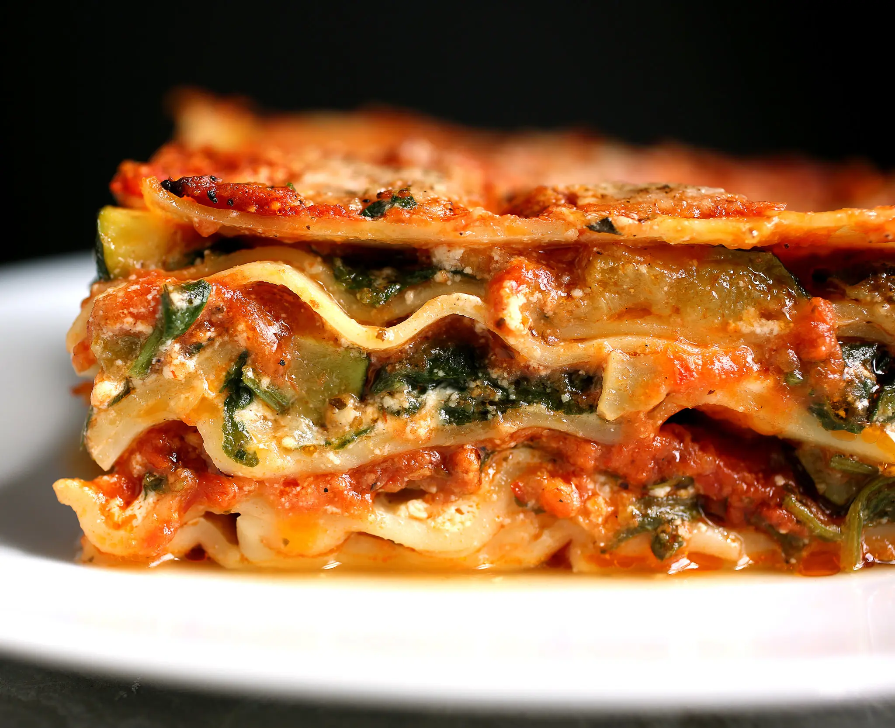

Eggplant Lasagna

Delicious lasagna made from, among other things, eggplant.
The recipe
Description
This is adapted from a much richer Italian vegetable lasagna recipe. Roasting the zucchini adds a welcome layer of flavor.
You can get ahead on lasagna by making up big batches of marinara sauce and freezing it, or in a pinch use a good commercial brand. The noodles are no-boil, which really makes these lasagnas easy to assemble.
Ingredients
- 2 tablespoons extra virgin olive oil
- 2 medium zucchini, cut in half crosswise, then cut lengthwise into 1/4-inch-thick slices
- Salt and freshly ground black pepper to taste
Steps
- Preheat the oven to 450 degrees. Toss the zucchini with the olive oil and season to taste with salt and pepper. Line a baking sheet with parchment paper and top with the slices of zucchini. Place in the oven and roast 8 minutes. Remove from the oven, close the oven door and, using tongs, flip the zucchini slices over. Return to the oven for 5 minutes, or until the zucchini is tender when pierced with a knife and browned in spots. Remove from the oven and reduce the heat to 350 degrees.
- Steam the spinach for 2 to 3 minutes above an inch of boiling water, just until it wilts. Rinse briefly with cold water, squeeze out excess water and chop coarsely.
- Blend the ricotta cheese with the egg, water, cinnamon, salt and pepper. Set aside.